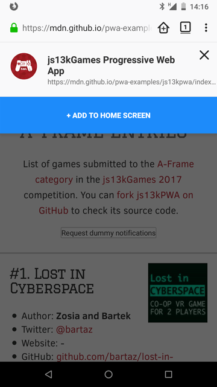
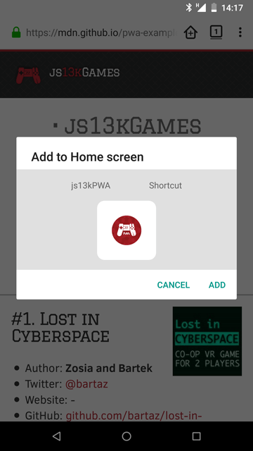
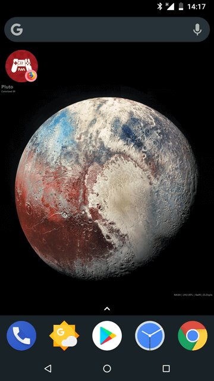

In the last article, we read about how the example application, js13kPWA, works offline thanks to its service worker, but we can go even further and allow users to install the web app on mobile and desktop browsers that support doing so. The installed web app can then be launched by users just as if it were any native app. This article explains how to achieve this using the web app's manifest.
These technologies allow the app to be launched directly from the device's home screen, rather than the user having to open the browser and then navigate to the site by using a bookmark or typing the URL. Your web app can sit next to native applications as first class citizens. This makes the web app easier to access; additionally, you can specify that the app be launched in fullscreen or standalone mode, thus removing the default browser user interface that would otherwise be present, creating an even more seamless and native-like feel.
To make the web site installable, it needs the following things in place:
Currently, only the Chromium-based browsers such as Chrome, Edge, and Samsung Internet require the service worker. If developing your app using Firefox, be aware that you will need a service worker to be compatible with Chromium-based browsers.
The key element is a web manifest file, which lists all the information about the website in a JSON format.
It usually resides in the root folder of a web app. It contains useful information, such as the app’s title, paths to different-sized icons that can be used to represent the app on an OS (such as an icon on the home screen, an entry in the Start menu, or an icon on the desktop), and a background color to use in loading or splash screens. This information is needed for the browser to present the web app properly during the installation process, as well as within the device's app-launching interface, such as the home screen of a mobile device.
The js13kpwa.webmanifest file of the js13kPWA web app is included in the {{HTMLElement("head")}} block of the index.html file using the following line of code:
<link rel="manifest" href="js13kpwa.webmanifest">
There are a few common kinds of manifest file that have been used in the past: manifest.webapp was popular in Firefox OS app manifests, and many use manifest.json for web manifests as the contents are organized in a JSON structure. However, the .webmanifest file format is explicitly mentioned in the W3C manifest specification, so that's what we'll use here.
The content of the file looks like this:
{
"name": "js13kGames Progressive Web App",
"short_name": "js13kPWA",
"description": "Progressive Web App that lists games submitted to the A-Frame category in the js13kGames 2017 competition.",
"icons": [
{
"src": "icons/icon-32.png",
"sizes": "32x32",
"type": "image/png"
},
// ...
{
"src": "icons/icon-512.png",
"sizes": "512x512",
"type": "image/png"
}
],
"start_url": "/pwa-examples/js13kpwa/index.html",
"display": "fullscreen",
"theme_color": "#B12A34",
"background_color": "#B12A34"
}
Most of the fields are self-explanatory, but to be certain we're on the same page:
name: The full name of your web app.short_name: Short name to be shown on the home screen.description: A sentence or two explaining what your app does.icons: A bunch of icon information — source URLs, sizes, and types. Be sure to include at least a few, so that one that fits best will be chosen for the user's device.start_url: The index document to launch when starting the app.display: How the app is displayed; can be fullscreen, standalone, minimal-ui, or browser.theme_color: A primary color for the UI, used by operating system.background_color: A color used as the app's default background, used during install and on the splash screen.A minimal web manifest must have at least a name and an icons field with at least one icon defined; that icon must have at least the src, sizes, and type sub-fields as well. Beyond that, everything is optional, though the description, short_name, and start_url fields are recommended. There are even more fields you can use than listed above — be sure to check the Web App Manifest reference for details.
"Add to home screen" (or a2hs for short) is a feature implemented by mobile browsers that takes the information found in an app's web manifest and uses them to represent the app on the device's home screen with an icon and name. This only works if the app meets all the necessary requirements, as described above.
When the user visits the PWA with a supporting mobile browser, it should display a notification (such as a banner or dialog box) indicating that it's possible to install the app as a PWA.

After the user indicates they wish to proceed with installation, the install banner is shown. That banner is automatically created by the browser, based on the information from the manifest file. For instance, the prompt includes the app's name and icon.

If the user clicks the button, there is a final step showing what the app will look like, and letting the user choose if they definitely want to add the app.

When confirmed, the app will be installed on the home screen.

Now the user can launch and use the web app just like any other application on their device. Depending on the device and operating system, the web app's icon may be badged with a small icon that indicates that it's a web app. In the screen shot above, for example, the app has a tiny Firefox icon, indicating that it's a web app that uses the Firefox runtime.
In some browsers, a splash screen is also generated from the information in the manifest, which is shown when the PWA is launched and while it's being loaded started up.
The icon and the theme and background colors are used to create this screen.
In this article, we learned about how we can make PWAs installable with a properly-configured web manifest, and how the user can then install the PWA with the "add to home screen" feature of their browser.
For more information on a2hs, be sure to read our Add to Home screen guide. Browser support is currently limited to Firefox for Android 58+, Mobile Chrome and Android Webview 31+, and Opera for Android 32+, but this should improve in the near future.
Now let's move to the last piece of the PWA puzzle: using push notifications to share announcements with the user, and to help the user re-engage with your app.
{{PreviousMenuNext("Web/Apps/Progressive/Offline_Service_workers", "Web/Apps/Progressive/Re-engageable_Notifications_Push", "Web/Apps/Progressive")}}
{{QuickLinksWithSubpages("/en-US/docs/Web/Progressive_web_apps/")}}